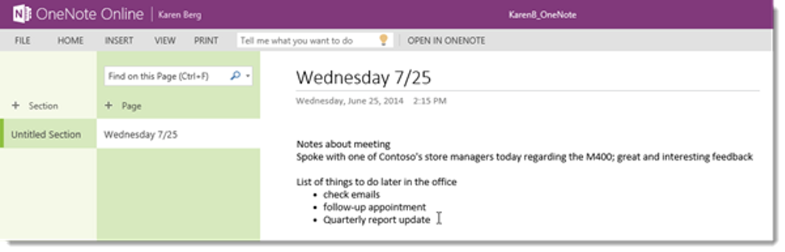
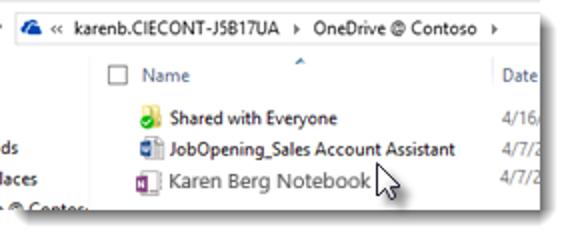

With a fresh cup of coffee in hand, Karen takes out her tablet to continue working. She doesn’t have to be at her desk or on a specific device to be productive. Even if she changes devices, her settings and content will stay with her online and off, so she can switch between devices without missing a beat.
Karen wants to record her notes from her meeting with the store manager in a OneNote notebook. From the Windows 10 lock screen, she swipes up, types in her password (pass@word1) and lands on the desktop.
To access her online notebook, she navigates to portal.microsoftonline.com and signs in with her credentials: karenb@yourtenantname.onmicrosoft.com and pass@word1.
She knows she has a OneNote for store visit notes stored in her OneDrive for Business account, so she clicks OneDrive in the pop-out menu…
and clicks on her Store Visit Notebook.

She creates a new page with today's date and adds her notes about the meeting along with a list of things she wants to do when she gets back in the office.

She then clicks on her name to navigate back to her OneDrive account.
She decides to share the notebook with the other operations VPs so they can review her notes and add their own.
She clicks the sharing icon next to the OneNote to share it with her team. By default, documents stored in OneDrive for Business are private until the user explicitly shares it with another user to view or edit.
She clicks Invite people.
Next, she adds her colleagues names in the first field and adds a message:
Got some interesting feedback from one of Contoso’s store managers today regarding the M400; please take a look as I will be researching the issue further and may need your assistance. Thanks!
Karen can control whether the people she is sharing with can edit or just view the file, and she can adjust these settings at any time.
She clicks Share to share the notebook with the team.
Before she exits OneDrive, she decides to sync it to her tablet so she can access the files without having to log in to the portal.
To do this, she taps or clicks Sync above the document list.
She taps or clicks Sync now and then Sync Now again…
and taps or clicks Show my files…, which takes her into the desktop File Explorer.
With her thoughts recorded and shared with colleagues, Karen decides to take the next bus back to Contoso, so she gathers her things and heads to the bus stop.
After settling in on the bus, Karen decides to review her notes one more time. She opens the OneNote notebook from OneDrive @ Contoso in File Explorer.

Even if the Wi-Fi on the bus is spotty, Karen would still able to access her OneDrive files without Internet access because she recently synced her OneDrive to her local device. Any changes she makes to the files would be synced back to the cloud once she has Internet access again.
Thanks to OneDrive for Business, Karen’s files are with her wherever she goes. She can easily store, sync and share her files from the cloud, making collaboration easier than ever. And with OneDrive synced to her device, she doesn't even need Internet access to view and edit her OneDrive files, helping her stay productive from anywhere.